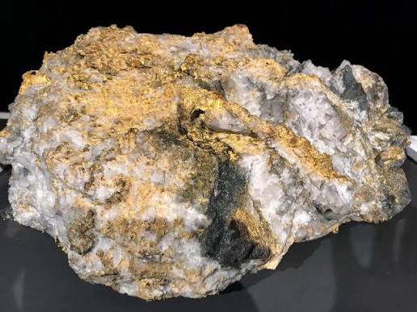

LOST APACHE GOLD FOUND IN SUPERSTITION MOUNTAINS

LEOPOLD O. BLOOM, local business magnate and entrepreneur, has claimed discovery of the "Lost Dutchman's gold mine" at an undisclosed location within his 15-acre plot of land in the Superstition Mountains. Many local legends claim the existence of a lost Apache gold mine, often linked to the Peralta massacre. But, to date, no such mine satisfying the grandiose claims has been found – until now, claims Mr. Bloom. "It's luck, really," said Mr. Bloom to a representative of the Arizona Sun, "I'm thrilled that it happened to be found on my land, to which I own the exclusive mineral rights."
Some have expressed doubt at Leopold's claim, including Mary Schuerman, a geologist at the university of Arizona. "In previous ground-penetrating radar studies, we've found no evidence of gold or subterranean structures in areas near Mr. Bloom's land, so this is rather surprising," she notes, "but sometimes the Earth can surprise us." While Mr. Bloom has publicly displayed samples of the gold (pictured above), he did not provide the Arizona Sun with photographs of the mine.